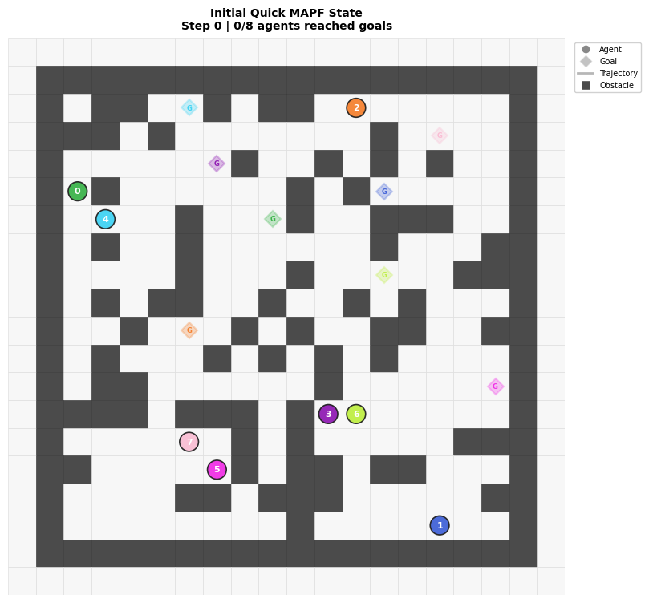
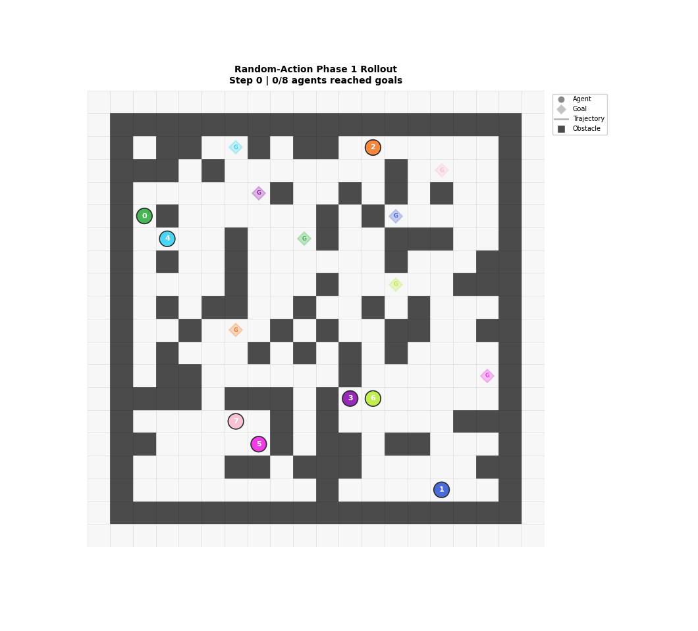
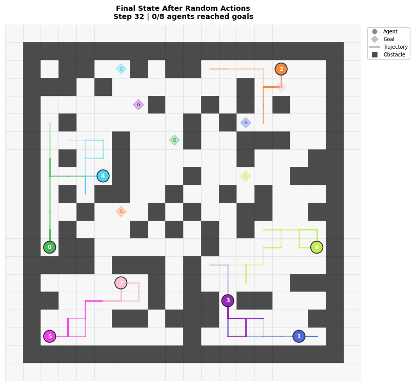

Generated at 2026-04-26 16:15:40 using the grasp_splats conda environment.
The Phase 1 wrapper creates named POGEMA configurations, returns consistent observation tensors, exposes grid state for debugging, and can run reproducible random-action rollouts.
Status: wrapper test and visualization generation completed.
| Field | Value |
|---|---|
| Name | quick |
| Agents | 8 |
| Requested map size | 16×16 |
| Rendered grid with POGEMA padding | [20, 20] |
| Obstacle density | 0.3 |
| Observation shape | [8, 3, 5, 5] |
| Seed | 7 |
| Random rollout steps | 32 |
| Mean random-policy reward | 0.000 |



Open this report and check whether the grid, obstacles, agents, goals, and trajectories are understandable. Raw numbers are in phase1_environment_summary.json.